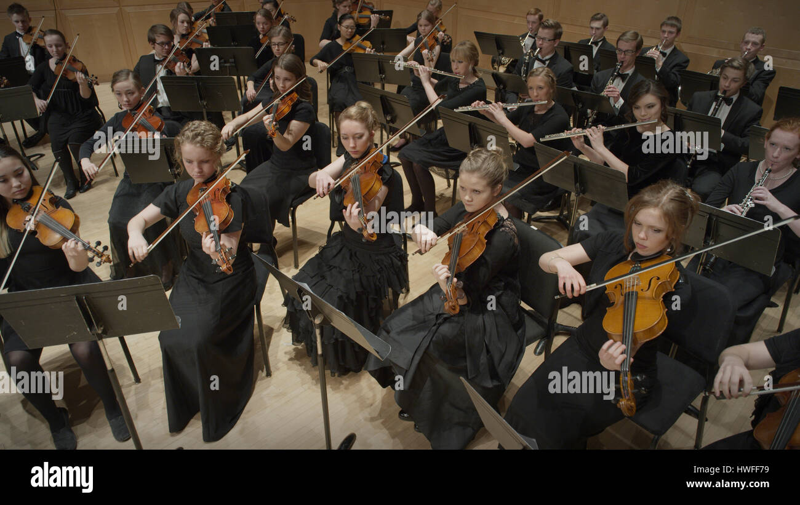

Music
Music is generally defined as the art of arranging sound to create some combination of form, harmony, melody, rhythm, or otherwise expressive content.
Definitions of music vary depending on culture,though it is an aspect of all human societies and a cultural universal.
While scholars agree that music is defined by a few specific elements, there is no consensus on their precise definitions.
The creation of music is commonly divided into musical composition, musical improvisation, and musical performance,
though the topic itself extends into academic disciplines, criticism, philosophy, and psychology.
Music may be performed or improvised using a vast range of instruments, including the human voice.
